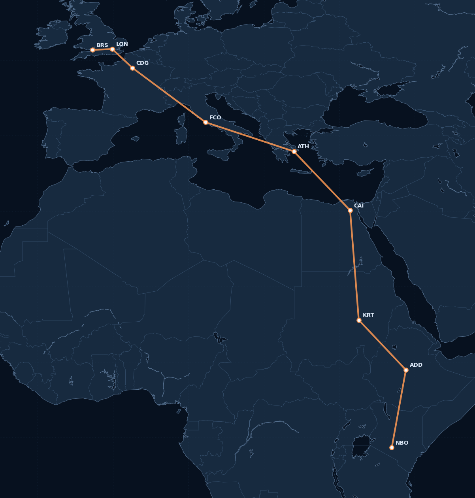
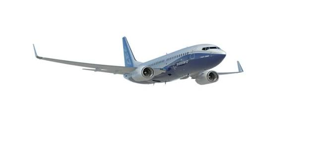

LinkedIn ↗
LinkedIn ↗Computer Science
Current undergraduate computing study in Bristol, with earlier university-level foundations in software engineering, networking, databases, mathematics and machine learning.
AlgorithmsAI / MLNetworksDatabasesSystems
EDGAR CHARLES OMONDI · ENGINEERING & RESEARCH PORTFOLIO
Software · AI · Security · Robotics · Aerospace · Quantum · Research
A mission control portfolio connecting software engineering, avionics discipline, artificial intelligence, cybersecurity, aerospace systems and research led scientific computing — from Nairobi to Bristol.
01 / Mission profile
The portfolio is designed around traceability, system interactions, failure awareness and evidence — not arbitrary skill percentages.
Current undergraduate computing study in Bristol, with earlier university-level foundations in software engineering, networking, databases, mathematics and machine learning.
Avionics and aircraft-systems training informs the portfolio’s emphasis on traceability, failure modes, interfaces and disciplined technical documentation.
Python, FastAPI, Flask, Django, React, Java, C/C++, databases, APIs, security automation and deployable research applications.
A unifying theme across quantum, photonics, robotics, aerospace and computational biology: systems that observe, infer, discover and adapt.
02 / Programme architecture
Advanced work is organised as a coherent programme rather than unrelated repositories. Projects are tracked as Built or In Progress, with dossiers showing current engineering maturity, architecture, validation strategy and next milestones.
03 / 53 advanced build projects
Search, filter, compare and inspect implementation scope. Every project is tracked as Built or In Progress with detailed engineering dossiers.
04 / 15 frontier research programmes
Research programmes are kept separate from the 53 build projects. Each starts with a falsifiable question, method and novelty hypothesis.
Active research and publication track around post-quantum security engineering, anomaly detection, response automation and cyber defence observability.
STATUS · GREEN / ONGOINGPublished research direction in satellite intelligence for water scarcity, contamination risk and environmental change detection.
STATUS · PUBLISHEDPublished research direction focused on flood prediction, environmental sensing and early-warning intelligence.
STATUS · PUBLISHED05 / Publications pipeline
A dedicated publications ledger separates published work, ongoing manuscript tracks and preprint-ready research concepts.
Satellite water-intelligence research strand focused on scarcity detection, contamination risk and EO-assisted intervention planning.
Flood detection and environmental early-warning research involving hydrological monitoring, geospatial sensing and AI-driven decision support.
Active publication pathway around post-quantum defence, adversarial detection, observability and automated response workflows.
Reserved publication placeholders for advanced robotics, quantum dynamics, geo-optics, photonics and aerospace systems research.
05 / Technology constellation
Select a technology to isolate relationships and see where it appears across the portfolio.
06 / Flight route visualisation
The route is now a focused mission-map visualisation: the aircraft marker moves through geographic checkpoints while the portfolio remains the main experience.

Waypoints are geographic presentation markers. The achievements are career milestones placed along the narrative route, not claims that those organisations are located at each checkpoint.
07 / Experience
Practical roles and engineering participation are kept separate from education for quick evaluation.
UWE Formula Student · UWE Bristol
Vehicle-engineering work including thermal behaviour, system design and multidisciplinary performance discussions.
UWE Bristol
Configured aerodynamic simulations, boundary conditions and airflow / pressure analysis to compare design variations.
iLabAfrica · Strathmore University · Nairobi
Built web and backend applications with Python, Django, Flask and JavaScript; integrated APIs with relational databases and contributed to research prototypes.
NASA Space Hub / Community contribution
Contributed to depth-data cleanup, noise reduction and feature extraction for environmental-observation data.
Collaborative software / AI work
Explored adaptive and intelligent behaviours in creative-computing and game environments.
08 / Education
Education is shown as a dedicated section instead of being compressed into one profile card.
 UWE BRISTOLSEPT 2025 — PRESENT
UWE BRISTOLSEPT 2025 — PRESENTUniversity of the West of England · UWE Bristol
 HARVARDAPRIL 2025
HARVARDAPRIL 2025Admission received · did not enrol
 STRATHMORE2023 — 2024
STRATHMORE2023 — 2024Strathmore University · Nairobi · part completed
B2-focused avionics background
09 / Aviation & systems training
Aircraft-system training is presented separately from software claims.
Aircraft-type systems training / rating coverage across the Boeing 737 Next Generation family.
Aircraft systems and maintenance training / rating coverage across the Embraer E-Jet family.

Maintenance practice, structural familiarity, system tracing and organisational compliance principles.
Electrical distribution, wiring concepts, displays, fault isolation and instrument-system reasoning.
Radio systems, navigation chains, communication workflows and aircraft guidance-system context.
Autoflight logic, flight guidance, instrument interpretation and operational systems understanding.
10 / Credentials
Professional certifications, active programmes and specialist technical training represented in the portfolio.
 CISCOCISCO
CISCOCISCO GOOGLE
GOOGLE MIT xPROMIT PE
MIT xPROMIT PE HARVARDX
HARVARDX11 / Awards & achievements
Global-level innovation recognition connected to NASA Space Apps work in Earth observation, environmental intelligence and technology-driven problem solving.
Contributor-level recognition for engagement and technical contribution in artificial-intelligence research and engineering activity.
Community-level recognition linked to ISS LiDAR EVI-2 work involving depth-data cleanup, noise reduction and feature extraction.
Competition-level recognition for rapid prototyping, software engineering and delivering an applied technology solution under hackathon constraints.
Technical innovation recognition for Internet-of-Things and embedded-systems work focused on connected sensing and practical engineering applications.
11 / Final approach
Interested in software engineering, AI/ML, cybersecurity, research-led engineering and multidisciplinary technical systems roles.